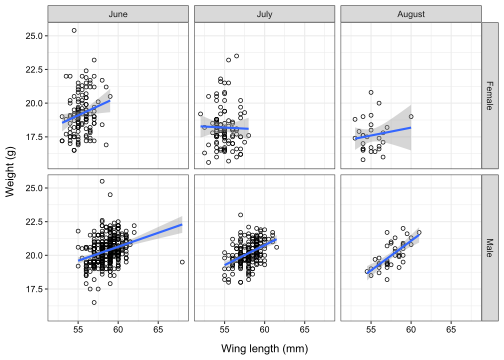

Code
library(tidyverse)
library(knitr)
library(corrplot)Benjamin Delory ![]()
Welcome to this tutorial on data exploration in R!
Throughout this tutorial, our aim is to provide you with the basic tools for exploring your data before carrying out any type of analysis. Data exploration is a very important step before starting any kind of analysis on ecological data, not to generate hypotheses (this should be done a priori, even before collecting data), but to make sure that the underlying assumptions of statistical models are respected, or to make sure that there are no outliers in our data that could strongly influence our analysis, thereby reducing the risk of type I (i.e., detecting an effect when none exists) or type II (i.e., not detecting an effect when there is one) errors. Data exploration is an important but often overlooked step, and this tutorial aims to understand some of the things to look for when exploring ecological data.
This tutorial builds on the previous ones and will focus on how we can use graphical tools to detect possible problems with our data. This tutorial is based on the excellent paper of Alain Zuur, Elena Ieno and Chris Elphick (2010), A protocol for data exploration to avoid common statistical problems, Methods in Ecology and Evolution, 1, 3-14. We strongly recommend that you read it. We will be using the same data to illustrate different data exploration techniques, but we will be constructing the graphs differently, relying mainly on the tools available in tidyverse. All the data needed for this tutorial are provided as supplementary information (Annex 1) of Zuur et al (2010).
Let’s get started!
Load tidyverse, knitr, and corrplot.
library(tidyverse)
library(knitr)
library(corrplot)Zuur et al (2010) defined an outlier as “an observation that has a relatively large or small value compared to the majority of observations”. There is no hard rule as to what “relatively” means in this context, but observations that qualify as outliers usually “stand out” and look very different from all other data points, perhaps due to measurement errors. Two types of graph are well suited to outlier detection: box plots and Cleveland plots.
Let’s start by loading the “SparrowsElphick.txt” dataset into R (use read_delim()). Have a look at how this dataset is structured using View() or head(). This dataset contains observations measured on 1295 sparrows. For the moment, we will look at just one response variable: wing length (expressed in millimeters). This variable is named “wingcrd” in the sparrows dataset.
#Load data into R
sparrows <- read_delim("Data_Zuur_et_al_2010/SparrowsElphick.txt")
#View data
kable(head(sparrows, n=10))| wingcrd | flatwing | tarsus | head | culmen | nalospi | wt | bandstat | initials | Year | Month | Day | Location | SpeciesCode | Sex | Age |
|---|---|---|---|---|---|---|---|---|---|---|---|---|---|---|---|
| 59.0 | 60.0 | 22.3 | 31.2 | 12.3 | 13.0 | 9.5 | 1 | 2 | 2002 | 9 | 19 | 4 | 1 | 0 | 2 |
| 54.0 | 55.0 | 20.3 | 28.3 | 10.8 | 7.8 | 12.2 | 1 | 2 | 2002 | 10 | 4 | 4 | 3 | 0 | 2 |
| 53.0 | 54.0 | 21.6 | 30.2 | 12.5 | 8.5 | 13.8 | 1 | 2 | 2002 | 10 | 4 | 4 | 3 | 0 | 2 |
| 55.0 | 56.0 | 19.7 | 30.4 | 12.1 | 8.3 | 13.8 | 1 | 8 | 2002 | 7 | 30 | 9 | 1 | 0 | 2 |
| 55.0 | 56.0 | 20.3 | 28.7 | 11.2 | 8.0 | 14.1 | 1 | 3 | 2002 | 10 | 4 | 4 | 3 | 0 | 2 |
| 53.5 | 54.5 | 20.8 | 30.6 | 12.8 | 8.6 | 14.8 | 1 | 7 | 2004 | 8 | 2 | 1 | 1 | 0 | 2 |
| 55.5 | 57.0 | 20.3 | 29.5 | 11.5 | 8.5 | 15.0 | 1 | 3 | 2002 | 10 | 4 | 4 | 3 | 0 | 2 |
| 55.0 | 56.0 | 20.9 | 30.0 | 11.7 | 8.5 | 15.0 | 1 | 3 | 2002 | 10 | 2 | 5 | 3 | 0 | 1 |
| 54.0 | 56.0 | 21.4 | 29.8 | 11.0 | 8.7 | 15.1 | 1 | 1 | 2002 | 10 | 21 | 7 | 3 | 0 | 2 |
| 55.0 | 56.0 | 20.4 | 29.8 | 11.2 | 8.1 | 15.1 | 1 | 2 | 2002 | 10 | 2 | 5 | 3 | 0 | 2 |
Now use ggplot2 to create a box plot using wing length as a response variable.
ggplot(sparrows,
aes(y=wingcrd))+
geom_boxplot()+
theme_bw()+
xlab("")+
ylab("Wing length (mm)")+
theme(axis.text = element_text(colour = "black"),
axis.text.x = element_blank(),
axis.title.y = element_text(margin = margin(r=10)))Such a box plot displays descriptive statistics on your data: the median value (represented by a thick horizontal line), as well as the 25% and 75% quartiles (lower and upper limits of the box). The difference between the 75% and 25% quartiles is called the interquartile range (the height of the box). Exactly half the observations in your data fall within this interquartile range. By default, the box plot whiskers are as long as 1.5 times the interquartile range. Observations beyond the whiskers are represented by individual dots and are possible outliers (i.e. observations whose values are rather large or small compared to the rest of the data) which will need to be checked to ensure that they are not measurement errors. It would be a mistake to remove all these observations without first checking them to make sure they are measurement errors.
A Cleveland plot is a method of choice for detecting outliers. To create a Cleveland plot, you just need to plot your variable of interest on the horizontal axis and the row number of your observations on the vertical axis. You can easily add a new column with the row number to your data using add_column().
sparrows |>
add_column(row_number=1:nrow(sparrows),
.before="wingcrd") |>
ggplot(aes(x=wingcrd,
y=row_number))+
geom_point(shape=1)+
theme_bw()+
ylab("Row number")+
xlab("Wing length (mm)")+
theme(axis.text = element_text(colour = "black"),
axis.title.y = element_text(margin = margin(r=10)),
axis.title.x = element_text(margin = margin(t=10)))When looking closely at this Cleveland plot, none of the observations on the left and right sides of the graph seem to stand out. All the wing length values seem reasonable, with no particularly small or large values to check.
Let’s continue our exploration of the sparrows data by looking at other response variables: Culmen length (culmen), Nalospi to bill tip (nalospi), Weight (wt), Wing length (wingcrd), Tarsus length (tarsus), and Head length (head). Before plotting, sort the sparrow observations by increasing weight values (to be consistent with Zuur et al, 2010). Then, create a figure with 6 panels, each displaying a Cleveland plot for each of these morphometric variables. You can do this using facet_wrap(). In facet_wrap(), set the scales argument to “free_x” to allow for different horizontal axis scales. Check what would happen if you keep scales = "fixed" (which is the default).
sparrows |>
select(culmen, nalospi, wt, wingcrd, tarsus, head) |>
arrange(wt) |>
add_column(row_number=1:nrow(sparrows),
.before="culmen") |>
pivot_longer(culmen:head,
names_to="variable",
values_to = "value") |>
mutate(variable = replace(variable, variable == "culmen", "Culmen length"),
variable = replace(variable, variable == "nalospi", "Nalospi to bill tip"),
variable = replace(variable, variable == "wt", "Weight"),
variable = replace(variable, variable == "wingcrd", "Wing length"),
variable = replace(variable, variable == "tarsus", "Tarsus length"),
variable = replace(variable, variable == "head", "Head length")) |>
ggplot(aes(x=value,
y=row_number))+
geom_point(shape=1)+
theme_bw()+
ylab("Row number")+
xlab("Value")+
theme(axis.text = element_text(colour = "black"),
axis.title.y = element_text(margin = margin(r=10)),
axis.title.x = element_text(margin = margin(t=10)))+
facet_wrap(~variable, scales = "free_x")
Looking at this figure, we quickly notice that two head length values appear smaller than the others, while one tarsus length value appears larger than the others. These observations seem to qualify as outliers and should be checked. It is unlikely that such extreme values could have occurred by chance. If these observations are indeed measurement (or observation) errors, they should be dropped before continuing the analysis. If you decide to remove observations from your dataset, always clearly document this decision in your code and give reasons for it. This is where having a detailed field notebook or experimental log comes in handy.
Homogeneity of variance is an important assumption of regression-related techniques such as ANalysis Of VAriance (ANOVA). One way to check for this is to use a conditional box plot. Let’s create one using a new set of bird data. The “Godwits.txt” data file contains observations for 9 variables measured on 330 Hudsonian godwits (Limosa haemastica).
#Load data into R
godwits <- read_delim("Data_Zuur_et_al_2010/Godwits.txt",
col_select = 1:9)
#View data
kable(head(godwits, n=10))| RECORD | DAY | MONTH | YEAR | LOCATION | AGE | SEX | PERIOD | mgconsumed |
|---|---|---|---|---|---|---|---|---|
| 1 | 5 | 1 | 97 | 0 | 0 | 0 | 0 | 0.07 |
| 2 | 5 | 1 | 97 | 0 | 0 | 0 | 0 | 0.16 |
| 3 | 5 | 1 | 97 | 0 | 0 | 0 | 0 | 0.25 |
| 4 | 5 | 1 | 97 | 0 | 0 | 0 | 0 | 0.07 |
| 5 | 5 | 1 | 97 | 0 | 0 | 0 | 0 | 0.14 |
| 6 | 5 | 1 | 97 | 0 | 0 | 0 | 0 | 0.26 |
| 7 | 5 | 1 | 97 | 0 | 0 | 0 | 0 | 0.10 |
| 8 | 6 | 2 | 97 | 0 | 0 | 0 | 1 | 0.21 |
| 9 | 6 | 2 | 97 | 1 | 0 | 0 | 1 | 0.11 |
| 10 | 6 | 2 | 97 | 0 | 0 | 0 | 1 | 0.09 |
We would be interested to test if the mean food intake rate (mgconsumed) of godwits changes between sexes (variable: SEX; either female or male) and time periods (variable: PERIOD; either summer, pre-migration, or winter). Before fitting a linear model to our data, we first need to check if all groups have similar variance. Use ggplot2 to create a conditional box plot visualising this. Pay attention to the following:
SEX is a variable with 3 levels: 0 (no information), 1 (female) and 2 (male). Filter out observations with SEX=0 and replace 1’s by “Female” and 2’s by “Male”.
PERIOD is a variable with 3 levels: 0 (Summer), 1 (Pre-migration) and 2 (Winter). Replace 0’s by “Summer”, 1’s by “Pre-migration” and 2’s by “Winter”.
godwits |>
filter(SEX != 0) |>
mutate(SEX = replace(SEX, SEX == 1, "Female"),
SEX = replace(SEX, SEX == 2, "Male"),
PERIOD = replace(PERIOD, PERIOD == 0, "Summer"),
PERIOD = replace(PERIOD, PERIOD == 1, "Pre-migration"),
PERIOD = replace(PERIOD, PERIOD == 2, "Winter")) |>
ggplot(aes(x=PERIOD,
y=mgconsumed))+
geom_boxplot(width=0.4)+
theme_bw()+
ylab("Food intake rate")+
xlab("Migration period")+
theme(axis.text = element_text(colour = "black"),
axis.title.y = element_text(margin = margin(r=10)),
axis.title.x = element_text(margin = margin(t=10)))+
facet_wrap(~SEX)From this figure, what can you conclude about (1) the variation in food intake rate between sexes (across migration periods), (2) the variation in food intake rate between migration periods (across sexes), and (3) the variation in food intake rate between migration periods within each sex category?
Another important assumption of linear regression is that data are normally distributed (i.e., data follow a normal distribution). But what data are we talking about? Can I simply verify this assumption by creating a histogram from ALL the values of the response variable I am interested in? The answer is: no, you can’t. Why not? Because the assumption to be verifed is that the data within each group are normally distributed. This underlines the importance of having a sufficient number of replicates at each level of your covariate, which should have been carefully considered when designing the study. You can check whether your data are normally distributed by making histograms of the raw data for each group.
Let’s go back to the sparrows dataset. Use ggplot2 to create a histogram of the weight (wt) of sparrows in June, July, and August. Use geom_histogram() to do this. What patterns do you observe?
sparrows |>
filter(Month >= 6 & Month <= 8) |>
mutate(Month=replace(Month, Month==6, "June"),
Month=replace(Month, Month==7, "July"),
Month=replace(Month, Month==8, "August")) |>
mutate(Month=factor(Month, levels=c("June",
"July",
"August"))) |> #Reorder factor levels to reorder facets
ggplot(aes(x=wt))+
geom_histogram()+
theme_bw()+
ylab("Frequency")+
xlab("Weight (g)")+
theme(axis.text = element_text(colour = "black"),
axis.title.y = element_text(margin = margin(r=10)),
axis.title.x = element_text(margin = margin(t=10)))+
facet_wrap(~Month)When modelling the relationship between a response variable whose value is often zero and other covariates, the use of zero-inflated models is often an option. But how can we visualise if our response variable of interest is often equal to zero? Sounds like you need to create a frequency plot. You can do this using geom_bar(). In geom_bar(), use stat="count".
To create a frequency plot, we will use another dataset (“ElphickBirdData.txt”). This dataset contains 2035 observations of the number of waterbirds (AQBIRDS) observed in flooded rice fields.
#Load data into R
waterbirds <- read_delim("Data_Zuur_et_al_2010/ElphickBirdData.txt")
#View data
kable(head(waterbirds, n=10))| CENSUS | YEAR | DATE…3 | Data | DATE…5 | SITE | BLOCK | FIELD | FIELDNEW | CHECK | AREA | SPTREAT | DEPTH | TUSW | GWFG | WHGO | CAGO | MALL | GADW | GWTE | CITE | UNTE | AMWI | NOPI | NOSH | RIDU | CANV | BUFF | WODU | RUDU | EUWI | UNDU | PBGB | SORA | COOT | COMO | AMBI | BCNH | GBHE | SNEG | GREG | WFIB | SACR | AMAV | BNST | BBPL | KILL | LBCU | GRYE | LEYE | LBDO | SNIP | DUNL | WESA | LESA | PEEP | RUFF | UNSH | RBGU | HEGU | CAGU | GUSP | WATERFWL | LLWADERS | SHOREBDS | AQBIRDS |
|---|---|---|---|---|---|---|---|---|---|---|---|---|---|---|---|---|---|---|---|---|---|---|---|---|---|---|---|---|---|---|---|---|---|---|---|---|---|---|---|---|---|---|---|---|---|---|---|---|---|---|---|---|---|---|---|---|---|---|---|---|---|---|---|---|---|
| 6 | 2 | 24-Jan-95 | 13 | 754 | 4mile | 1 | 6 | 106 | 0 | 3.38 | rlfld | 83.9 | 0 | 0 | 0 | 0 | 0.0000000 | 0.0000000 | 0 | 0.0000000 | 0 | 0.591716 | 0.0000000 | 0.0000000 | 0 | 0 | 0 | 0.0000000 | 0.0000000 | 0 | 0 | 0.0000000 | 0 | 0.000000 | 0 | 0 | 0 | 0 | 0 | 0 | 0.0000000 | 0 | 0 | 0 | 0 | 0 | 0 | 0 | 0 | 0 | 0 | 0 | 0 | 0 | 0 | 0 | 0 | 0 | 0 | 0 | 0 | 0.5917160 | 0.0000000 | 0 | 0.591716 |
| 11 | 2 | 13-Mar-95 | 15 | 802 | 4mile | 1 | 6 | 106 | 0 | 3.38 | rlfld | 73.9 | 0 | 0 | 0 | 0 | 1.1834320 | 0.0000000 | 0 | 0.0000000 | 0 | 0.000000 | 0.0000000 | 0.0000000 | 0 | 0 | 0 | 0.0000000 | 0.0000000 | 0 | 0 | 0.0000000 | 0 | 0.000000 | 0 | 0 | 0 | 0 | 0 | 0 | 0.0000000 | 0 | 0 | 0 | 0 | 0 | 0 | 0 | 0 | 0 | 0 | 0 | 0 | 0 | 0 | 0 | 0 | 0 | 0 | 0 | 0 | 1.1834320 | 0.0000000 | 0 | 1.183432 |
| 6 | 2 | 24-Jan-95 | 13 | 754 | 4mile | 1 | 5 | 105 | 0 | 7.66 | rlfld | 54.1 | 0 | 0 | 0 | 0 | 1.9582245 | 0.0000000 | 0 | 0.0000000 | 0 | 0.000000 | 0.5221932 | 0.2610966 | 0 | 0 | 0 | 0.0000000 | 0.0000000 | 0 | 0 | 0.0000000 | 0 | 6.527415 | 0 | 0 | 0 | 0 | 0 | 0 | 0.0000000 | 0 | 0 | 0 | 0 | 0 | 0 | 0 | 0 | 0 | 0 | 0 | 0 | 0 | 0 | 0 | 0 | 0 | 0 | 0 | 0 | 2.7415144 | 0.0000000 | 0 | 9.268930 |
| 11 | 2 | 13-Mar-95 | 15 | 802 | 4mile | 1 | 5 | 105 | 0 | 7.66 | rlfld | 53.1 | 0 | 0 | 0 | 0 | 0.2610966 | 0.0000000 | 0 | 0.0000000 | 0 | 0.000000 | 0.0000000 | 0.0000000 | 0 | 0 | 0 | 0.0000000 | 0.0000000 | 0 | 0 | 0.0000000 | 0 | 4.569191 | 0 | 0 | 0 | 0 | 0 | 0 | 0.0000000 | 0 | 0 | 0 | 0 | 0 | 0 | 0 | 0 | 0 | 0 | 0 | 0 | 0 | 0 | 0 | 0 | 0 | 0 | 0 | 0 | 0.2610966 | 0.0000000 | 0 | 4.830287 |
| 6 | 2 | 24-Jan-95 | 13 | 754 | 4mile | 1 | 3 | 103 | 0 | 19.14 | rlfld | 44.2 | 0 | 0 | 0 | 0 | 0.3134796 | 0.3134796 | 0 | 0.0000000 | 0 | 0.000000 | 0.0000000 | 0.4702194 | 0 | 0 | 0 | 0.1044932 | 0.0000000 | 0 | 0 | 0.0522466 | 0 | 3.761756 | 0 | 0 | 0 | 0 | 0 | 0 | 0.0000000 | 0 | 0 | 0 | 0 | 0 | 0 | 0 | 0 | 0 | 0 | 0 | 0 | 0 | 0 | 0 | 0 | 0 | 0 | 0 | 0 | 1.2016719 | 0.0000000 | 0 | 5.015674 |
| 11 | 2 | 13-Mar-95 | 15 | 802 | 4mile | 1 | 3 | 103 | 0 | 19.14 | rlfld | 43.2 | 0 | 0 | 0 | 0 | 0.1044932 | 0.0000000 | 0 | 0.1567398 | 0 | 0.000000 | 0.0000000 | 0.2089864 | 0 | 0 | 0 | 0.0000000 | 0.0522466 | 0 | 0 | 0.0522466 | 0 | 1.567398 | 0 | 0 | 0 | 0 | 0 | 0 | 0.0000000 | 0 | 0 | 0 | 0 | 0 | 0 | 0 | 0 | 0 | 0 | 0 | 0 | 0 | 0 | 0 | 0 | 0 | 0 | 0 | 0 | 0.5224660 | 0.0000000 | 0 | 2.142111 |
| 11 | 2 | 13-Mar-95 | 15 | 802 | 4mile | 1 | 8 | 108 | 0 | 3.36 | fld | 41.8 | 0 | 0 | 0 | 0 | 0.0000000 | 0.0000000 | 0 | 0.0000000 | 0 | 0.000000 | 0.0000000 | 0.0000000 | 0 | 0 | 0 | 0.0000000 | 0.0000000 | 0 | 0 | 0.0000000 | 0 | 0.000000 | 0 | 0 | 0 | 0 | 0 | 0 | 0.0000000 | 0 | 0 | 0 | 0 | 0 | 0 | 0 | 0 | 0 | 0 | 0 | 0 | 0 | 0 | 0 | 0 | 0 | 0 | 0 | 0 | 0.0000000 | 0.0000000 | 0 | 0.000000 |
| 6 | 2 | 24-Jan-95 | 13 | 754 | 4mile | 1 | 4 | 104 | 0 | 4.52 | rlfld | 41.5 | 0 | 0 | 0 | 0 | 0.0000000 | 0.0000000 | 0 | 0.0000000 | 0 | 0.000000 | 0.0000000 | 0.0000000 | 0 | 0 | 0 | 0.0000000 | 0.0000000 | 0 | 0 | 0.2212389 | 0 | 18.584071 | 0 | 0 | 0 | 0 | 0 | 0 | 0.6637168 | 0 | 0 | 0 | 0 | 0 | 0 | 0 | 0 | 0 | 0 | 0 | 0 | 0 | 0 | 0 | 0 | 0 | 0 | 0 | 0 | 0.0000000 | 0.6637168 | 0 | 19.469027 |
| 7 | 2 | 29-Jan-95 | 13 | 759 | 4mile | 1 | 5 | 105 | 0 | 7.66 | rlfld | 40.1 | 0 | 0 | 0 | 0 | 5.3524804 | 0.0000000 | 0 | 0.0000000 | 0 | 0.000000 | 0.3916449 | 0.0000000 | 0 | 0 | 0 | 0.0000000 | 0.0000000 | 0 | 0 | 0.0000000 | 0 | 4.830287 | 0 | 0 | 0 | 0 | 0 | 0 | 0.0000000 | 0 | 0 | 0 | 0 | 0 | 0 | 0 | 0 | 0 | 0 | 0 | 0 | 0 | 0 | 0 | 0 | 0 | 0 | 0 | 0 | 5.7441253 | 0.0000000 | 0 | 10.574412 |
| 6 | 1 | 27-Jan-94 | 13 | 392 | 4mile | 1 | 8 | 108 | 0 | 3.36 | fld | 40.0 | 0 | 0 | 0 | 0 | 0.0000000 | 0.0000000 | 0 | 0.0000000 | 0 | 0.000000 | 0.0000000 | 0.0000000 | 0 | 0 | 0 | 0.0000000 | 0.0000000 | 0 | 0 | 0.0000000 | 0 | 0.000000 | 0 | 0 | 0 | 0 | 0 | 0 | 0.0000000 | 0 | 0 | 0 | 0 | 0 | 0 | 0 | 0 | 0 | 0 | 0 | 0 | 0 | 0 | 0 | 0 | 0 | 0 | 0 | 0 | 0.0000000 | 0.0000000 | 0 | 0.000000 |
How many times is the number of waterbirds equal to zero in this dataset? Create a frequency plot to find out! Focus on observed values between 0 and 100, and do not forget to round them off (use round()).
waterbirds |>
filter(AQBIRDS < 100) |>
ggplot(aes(x=round(AQBIRDS)))+
geom_bar(stat = "count")+
theme_bw()+
ylab("Frequency")+
xlab("Observed values")+
theme(axis.text = element_text(colour = "black"),
axis.title.y = element_text(margin = margin(r=10)),
axis.title.x = element_text(margin = margin(t=10)))What can you conclude from this frequency plot?
Zuur et al (2010) defined colinearity as “the existence of correlation between covariates”. The strength of the linear relationship between two continuous variables (X and Y) can be measured using Pearson’s correlation coefficient (Equation 1).
\[ r=\frac{cov(X,Y)}{\sigma_X\sigma_Y} \tag{1}\]
In Equation 1, \(cov(X,Y)\) is the covariance between X and Y. \(\sigma_X\) and \(\sigma_Y\) are the standard deviation values for variables X and Y. If \(r=0\), there is no linear relationship between X and Y. If \(r=1\) or \(r=-1\), there is a perfect positive or negative linear relationship between the two variables, respectively.
A useful way to check for colinearity between covariates is to create a correlation plot. A scatter plot would also be a good idea, but as we will see how to create scatter plots in the next section, let’s concentrate here on creating a correlation plot.
In this example, we will work with a new sparrows dataset (VegSamplesV1.txt). The researchers who produced this dataset wanted to know whether the relative abundance of various plant species and other vegetation characteristics could explain the number of saltmarsh sparrows captured in each plot (Banded). We will work with the following covariates:
#Load data into R
sparrows2 <- read_delim("Data_Zuur_et_al_2010/VegSamplesV1.txt",
col_select = 1:19)
#View data
kable(head(sparrows2, n=10))| Year | Site | UniversalPlotName | Banded | PtCountsum | Avgmaxht | Avgdens | ht.thatch | S.patens | Distichlis | S.alternifloraShort | S.alternifloraTall | Juncus | Bare | Other | Phragmites | Shrub | Tallsedge | Water |
|---|---|---|---|---|---|---|---|---|---|---|---|---|---|---|---|---|---|---|
| 2002 | EastRiverMarsh | 02PLOT012 | 31 | 53 | 33.19 | 23.30 | 4.67 | 21.31 | 41.47 | 32.22 | 2.78 | 0.00 | 1.67 | 0.56 | 0 | 0.00 | 0 | 0.00 |
| 2002 | EastRiverMarsh | 02PLOT013 | 40 | 40 | 48.22 | 27.63 | 6.56 | 11.67 | 52.78 | 23.61 | 9.72 | 0.00 | 0.00 | 0.00 | 0 | 0.00 | 0 | 2.22 |
| 2002 | EastRiverMarsh | 02PLOT014 | 15 | 15 | 33.81 | 26.40 | 3.33 | 29.09 | 17.80 | 35.89 | 0.00 | 2.22 | 8.33 | 0.00 | 0 | 6.67 | 0 | 0.00 |
| 2002 | EastRiverMarsh | 02PLOT015 | 27 | 33 | 28.34 | 45.63 | 7.33 | 52.22 | 19.76 | 5.56 | 3.33 | 7.78 | 2.22 | 8.89 | 0 | 0.00 | 0 | 0.25 |
| 2002 | EastRiverMarsh | 02PLOT016 | 20 | 17 | 28.75 | 38.88 | 3.44 | 47.84 | 12.78 | 15.49 | 10.00 | 0.00 | 10.14 | 3.75 | 0 | 0.00 | 0 | 0.00 |
| 2002 | EastRiverMarsh | 02PLOT017 | 17 | 30 | 24.19 | 53.60 | 3.44 | 60.42 | 0.01 | 26.44 | 0.00 | 0.00 | 2.01 | 0.00 | 0 | 0.00 | 0 | 11.11 |
| 2002 | EastRiverMarsh | 02PLOT018 | 17 | 49 | 39.34 | 18.20 | 2.11 | 17.35 | 2.67 | 42.56 | 25.03 | 0.56 | 11.29 | 0.56 | 0 | 0.00 | 0 | 0.00 |
| 2002 | EastRiverMarsh | 02PLOT019 | 29 | 39 | 38.75 | 48.18 | 5.89 | 55.34 | 10.32 | 20.56 | 6.44 | 5.56 | 1.78 | 0.00 | 0 | 0.00 | 0 | 0.00 |
| 2002 | HammonassetSP | 02PLOT001 | 13 | 22 | 38.06 | 33.53 | 5.22 | 42.78 | 0.00 | 37.76 | 9.78 | 0.00 | 3.33 | 1.91 | 0 | 0.00 | 0 | 4.44 |
| 2002 | HammonassetSP | 02PLOT002 | 37 | 23 | 27.34 | 17.40 | 0.89 | 17.22 | 0.00 | 29.74 | 16.00 | 0.00 | 14.56 | 0.26 | 0 | 0.00 | 0 | 22.22 |
Now that the data have been imported into R, we can create a correlation plot to check for colinearity between the covariates we want to include in a statistical model. You can do this with the corrplot() or corrplot.mixed() function in the corrplot package.
corrplot.mixed(corr=cor(sparrows2[,c("Avgmaxht",
"Avgdens",
"ht.thatch",
"Shrub",
"Juncus",
"S.patens",
"Distichlis",
"S.alternifloraShort",
"S.alternifloraTall",
"Phragmites",
"Bare",
"Water")]),
lower="number",
upper="ellipse",
tl.pos="lt",
diag="n",
tl.col="black",
number.cex=0.7)What do you see? Is there colinearity among covariates in this dataset?
The easiest way to find out how the relationship between a response variable of interest and a covariate looks like is to create a scatter plot. Let’s do this using the sparrows dataset we just used to look as colinearity. Using ggplot2, create a figure with multiple panels showing the relationship between the number of sparrows observed in a plot (Banded) and all covariates used in the previous section. In tidyverse, this is done by combining pivot_longer(), geom_point() and facet_wrap(). Let’s also add a smoother to each scatter plot to better visualise the relationships (use geom_smooth()). Give it a try!
sparrows2 |>
select(Banded,
Avgmaxht,
Avgdens,
ht.thatch,
Shrub,
Juncus,
S.patens,
Distichlis,
S.alternifloraShort,
S.alternifloraTall,
Phragmites,
Bare,
Water) |>
pivot_longer(cols = Avgmaxht:Water,
names_to = "Covariate",
values_to = "Value") |>
ggplot(aes(x=Value,
y=Banded))+
geom_point(shape=1)+
geom_smooth(span = 1.5)+
theme_bw()+
facet_wrap(~Covariate, scales = "free_x")+
ylab("Number of sparrows")+
xlab("Covariate value")+
theme(axis.text = element_text(colour = "black"),
axis.title.y = element_text(margin = margin(r=10)),
axis.title.x = element_text(margin = margin(t=10)))Are there any covariates that seem to be good predictors of the number of sparrows in a plot?
What do we mean by interaction in this context? Let’s return to the sparrow morphometric dataset used earlier. Let’s imagine that a researcher wants to determine whether the relationship between body mass (response variable) and wing length depends on other covariates, such as time and sex. If the relationship between body mass and wing length changes over time and differs between males and females, this suggests that there is a three-way interaction between wing length, time and sex. On the contrary, if the relationship between body mass and wing length is stable over time and is similar for males and females, there is probably no interaction between wing length, time and sex.
Let’s visualise this! The best way to evaluate if interactions should be considered is to create a conditioning plot (or coplot). We can easily do this in tidyverse by combining geom_point() (to create scatter plots), geom_smooth(method="lm") (to add a linear model on top of each scatter plot), and facet_grid() (to create multiple panels, with males/females as rows, and June/July/August as columns). In the Sex column, males are labelled 4 and females 5. Only consider observations where SpeciesCode is equal to 1. Give it a try!
sparrows |>
filter(SpeciesCode == 1) |>
select(wt, wingcrd, Month, Sex) |>
filter(Month >= 6 & Month <= 8) |>
filter(Sex == 4 | Sex == 5) |>
mutate(Month=replace(Month, Month==6, "June"),
Month=replace(Month, Month==7, "July"),
Month=replace(Month, Month==8, "August"),
Sex=replace(Sex, Sex==4, "Male"),
Sex=replace(Sex, Sex==5, "Female")) |>
mutate(Month=factor(Month, levels=c("June",
"July",
"August"))) |>
ggplot(aes(x=wingcrd,
y=wt))+
geom_point(shape=1)+
theme_bw()+
ylab("Weight (g)")+
xlab("Wing length (mm)")+
theme(axis.text = element_text(colour = "black"),
axis.title.y = element_text(margin = margin(r=10)),
axis.title.x = element_text(margin = margin(t=10)))+
facet_grid(Sex~Month)+
geom_smooth(method="lm")
What can you conclude from this figure?
We hope this tutorial has convinced you of the importance of taking the time to explore your data before starting any form of analysis. Many problems occurring at the data analysis stage could be avoided by spending more time exploring and getting to know your data. This is particularly true for large datasets. Graphical tools are essential in this endeavor, which is why we have spent a fair amount of time in this course familiarizing ourselves with R functions to organise and plot data. Of course, this tutorial is far from exhaustive and we encourage you to continue learning and practicing data exploration in R.